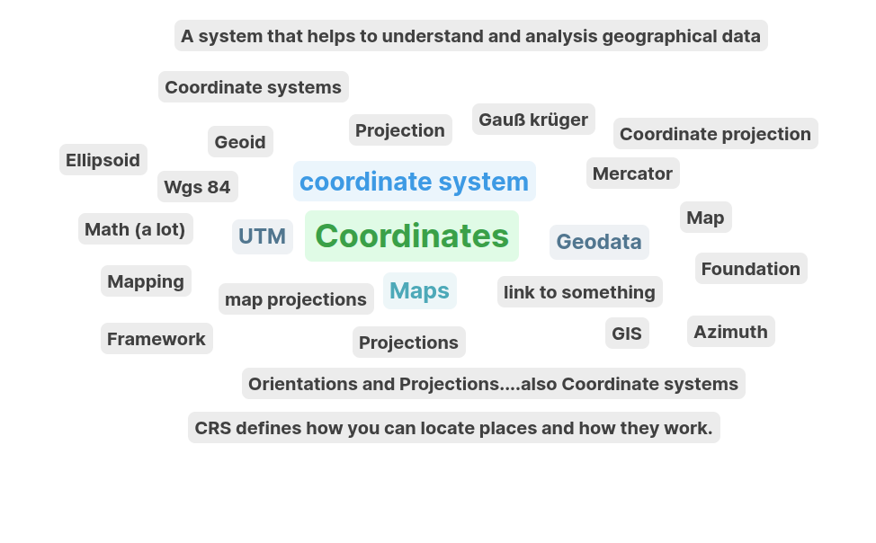
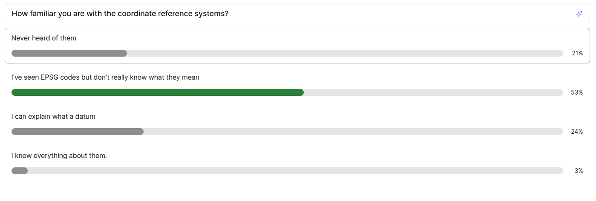
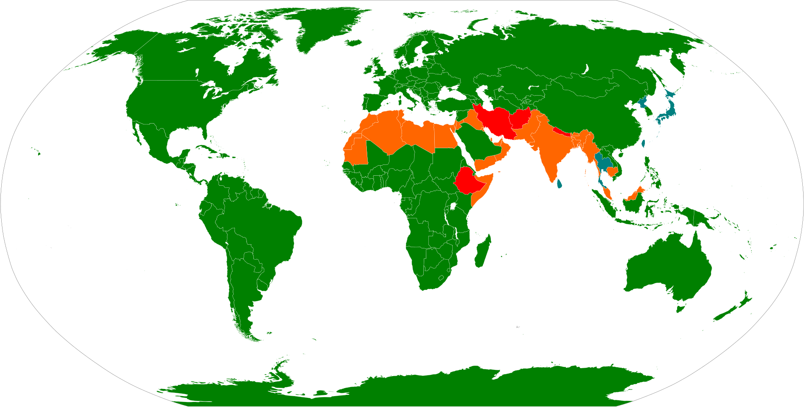
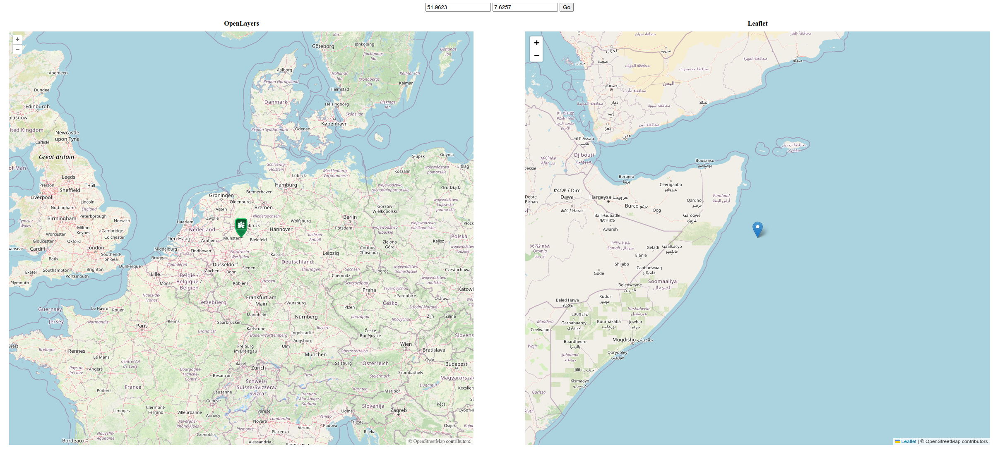
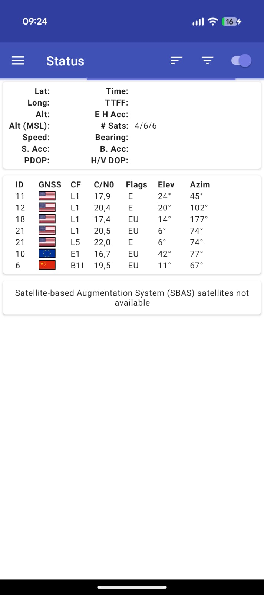
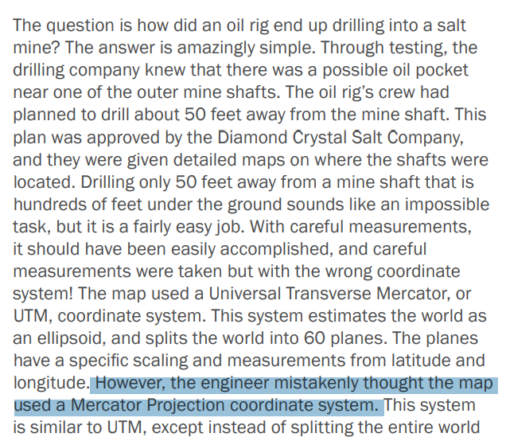
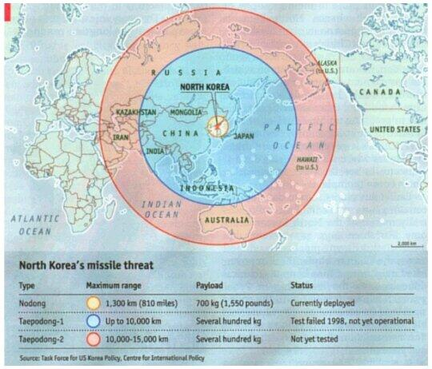
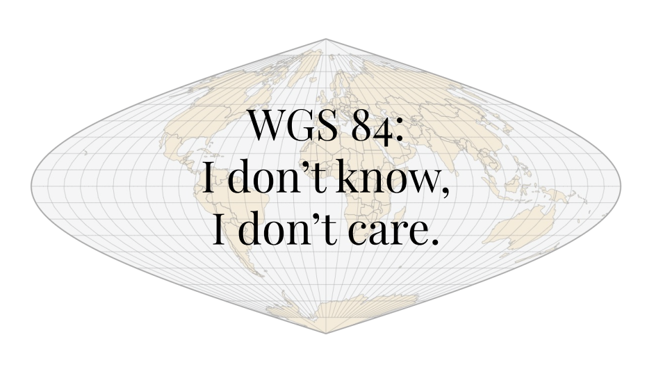
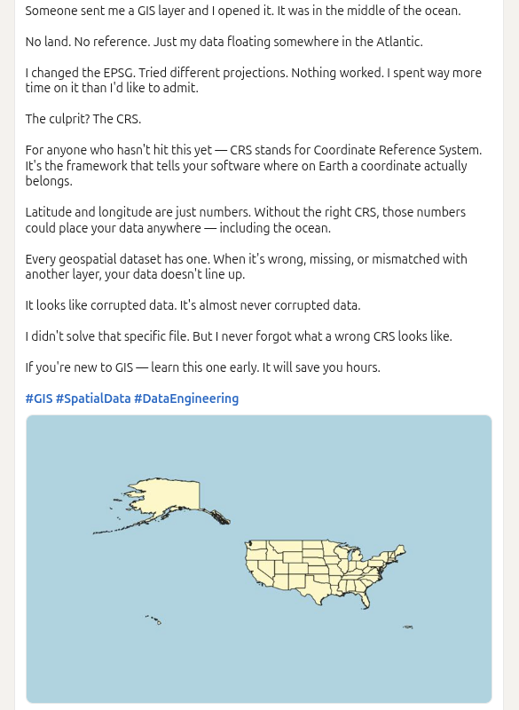
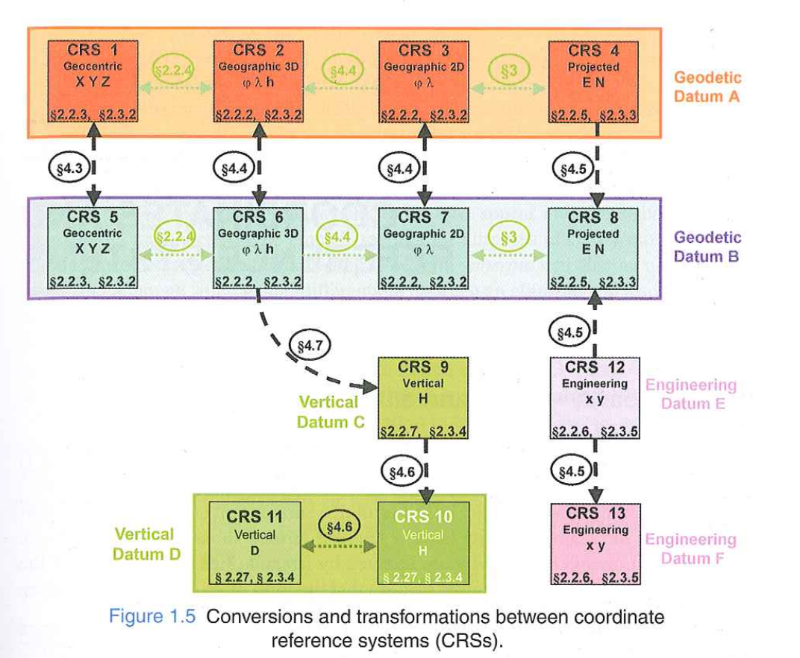

Reference Systems
LE01- Reference Systems in Practice
Overview
- Slido
- Learning objectives of the course
- Fundamentals
- Where/why we need reference systems?
- Book chapters organization
- Up next
1. Share your thoughts
What comes to your mind, when you hear “Coordinate reference system”?

1. Share your thoughts again

2. Learning objectives
By the end of the course you will be able to:
Identify, interpret, and critically evaluate coordinate reference system information in geospatial data and software
Select and apply appropriate projections, datums, and transformations for a given task
Diagnose and fix reference system problems when combining, transforming, or sharing spatial data
2. Learning objectives …
And along the way, you’ll be able to explain:
Why Africa looks the same size as Greenland on many world maps — even though it is 14 times larger -> True size
Why Google Maps uses a projection that is mathematically wrong — and why they chose it anyway
Why many world maps show Antarctica as an infinitely wide strip at the bottom — or simply cut it off
Why your phone’s GPS might say you’re at 8820 m elevation while the official sign at the summit says 8848 m — and both are correct
3. Fundamentals
Geographic Information- three components
Where, When and What
Space, Time and Attribute
Münster, 9am 09.04.2025, Temperature -1°C
Space representation
Space as Coordinates
[51.968°, 7.665°, 62m, 9am, 09.04.2025, Temperature -1°C]
Space as place name
[Münster, 9am 09.04.2025, Temperature -1°C]
Space as a spatial description
[64Km west of Bielfeld, 9am 09.04.2025, Temperature -1°C]
Coordinates are values in a reference system
51.968849°,7.6650811°, 62m
51.968849° degrees East from Longitude 0 (Greenwich)
7.6650811° degrees North from Latitude 0 (Equator)
62m above the sea level
Without the reference(Greenwich, Equator, Sea level,..) the coordinates are meaningless
Temporal descriptions are values in a reference system
Time as a time stamp 09.04.2025 09:00:00
Universally? accepted system

- UTC
- Gregorian Calendar https://en.wikipedia.org/wiki/Gregorian_calendar
- No. of seconds since 01.01.1970 - Epoch time 09.04.2025 10:02:00 GMT = 1744192974
Attribute representation
Temperature, -1°C

Summary: Reference systems-definition
Key features of any reference system are:
Origin
Orientation
Unit of Measurement
Summary
Values are not meaningful by themselves, their accurate interpretation necessitates knowledge of the reference system(s)
Put differently: without a documentation of the reference systems, ambiguity is guaranteed
Conversion between values in different reference systems is often desirable, sometimes possible without information loss, sometimes not
Reference systems are not absolute, they are created (and live by) conventions
4. Where/why we need reference systems?
Web mapping
- [51.9623, 7.6257]

Positioning
GPS uses World Geodetic System 1984 (WGS 84)
GLONASS uses Parametry Zemli (PZ-90)
Galileo uses Galile Terestrial Reference Frame (GTRF)
Beidou uses China Terrestrial Reference Frame (CGCS 2000)
https://gssc.esa.int/navipedia/index.php/Reference_Frames_in_GNSS
Which of these system does your smart phone use?
Positioning

Combining data from different sources
Engineering Oops: The Maelstrom of Lake Peigneur

Is earth flat??
The concentric circles map was created by the Economist

Look at more examples here ..

Javier Jimenez Shaw: WGS 84: I don’t Know I don’t care
Has this ever happened to you?

Summary
- Reference systems often go unnoticed, yet they are crucial to our interaction with spatio-temporal information
- Three important questions:
- How to document reference system information?
- How to find out reference system information when it is not “there”?
- How to convert values from one reference system to another?
5. About the Book

6. Up Next
For the next lecture
- Read chapters 1 and 2 of the course book (up to Sec. 2.3.3, page 29)
- Answer (for yourself) the following questions:
- Why is a geographic dataset without coordinate system information ambiguous?
- What is a equipotential surface?
- Name one similarity and two differences between latitude and longitude
- Name four types of datums and their differences
- Name one similarity and two differences between WGS84 and ITRF
- Submit your questions to Learnweb by Wednesday noon next week (22.04.2026 12:00:00)